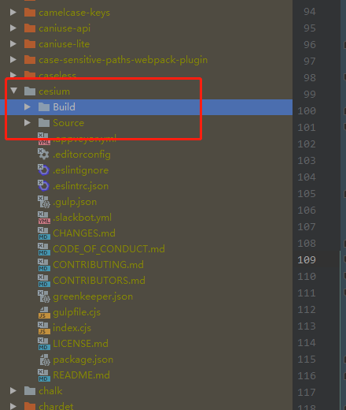
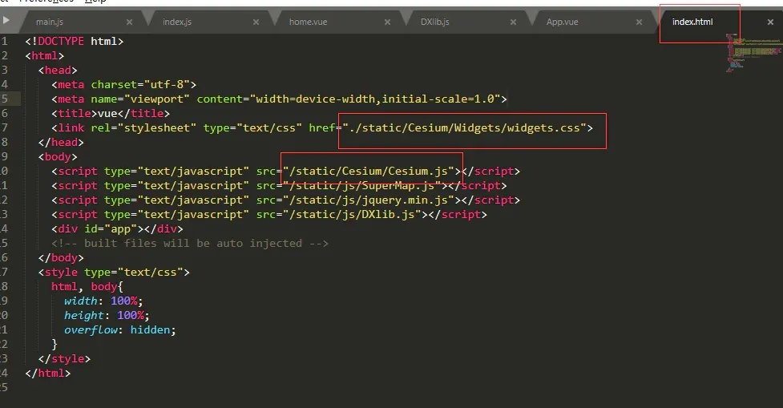
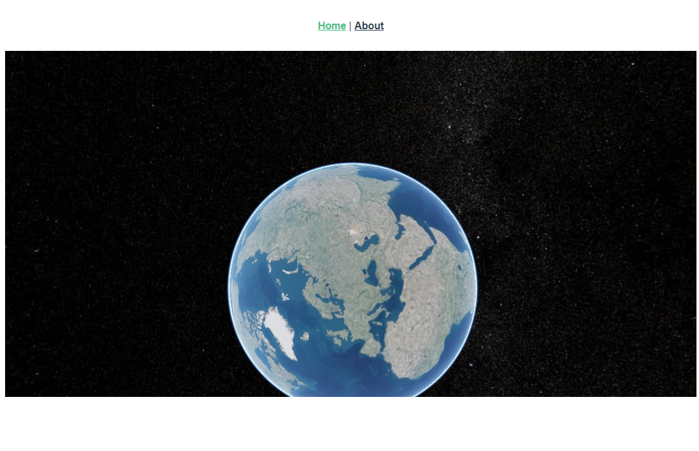

最近因为项目需要，又开了一个填坑，来记录自己学习和使用cesium中遇到的问题或者总结的经验。
1.在vue中加载cesium
主要的引入方式有两种
- 在
index.html中直接加载js和css - 通过webpack加载
下面详细记录两种加载方式
1.直接引用cesium
1.安装 npm i cesium
2.拷贝node_modules/cesium/build下的文件到public中

3.在
index.html中引用
然后就可以在项目中愉快的使用了
2.通过webpack加载cesium
安装包 yarn add cesium
配置vue.config.js
2
3
4
5
6
7
8
9
10
11
12
13
14
15
16
17
18
19
20
21
22
23
24
25
26
27
28
29
30
31
32
33
34
35
36
37
38
39
40
41
42
43
44
45
46
47
48
49
50
51
52
53
54
55
56
57
58
59
const CopyWebpackPlugin = require('copy-webpack-plugin')
const webpack = require('webpack')
const path = require('path')
// 添加cesium文件路径
const cesiumSource = './node_modules/cesium/Source'
const cesiumWorkers = '../Build/Cesium/Workers'
module.exports = {
publicPath: './',
outputDir: 'dist',
assetsDir: 'assets',
productionSourceMap: false,
filenameHashing: false,
lintOnSave: true,
devServer: {
open: false,
host: '0.0.0.0',
port: 8066,
https: false,
hotOnly: false,
proxy: {
'/3dtiles': {
target: `http://localhost`,
changeOrigin: true
}
}
},
configureWebpack: {
output: {
sourcePrefix: ' '
},
amd: {
toUrlUndefined: true
},
resolve: {
alias: {
vue$: 'vue/dist/vue.esm.js',
'@': path.resolve('src'),
cesium: path.resolve(__dirname, cesiumSource)
}
},
plugins: [
new CopyWebpackPlugin([{ from: path.join(cesiumSource, cesiumWorkers), to: 'Workers' }]),
new CopyWebpackPlugin([{ from: path.join(cesiumSource, 'Assets'), to: 'Assets' }]),
new CopyWebpackPlugin([{ from: path.join(cesiumSource, 'Widgets'), to: 'Widgets' }]),
new CopyWebpackPlugin([{ from: path.join(cesiumSource, 'ThirdParty/Workers'), to: 'ThirdParty/Workers' }]),
new webpack.DefinePlugin({
CESIUM_BASE_URL: JSON.stringify('./')
})
],
module: {
unknownContextCritical: /^.\/.*$/,
unknownContextCritical: false
}
}
}
- 项目引用
2
3
4
5
// import Cesium from 'cesium/Cesium'
import * as Cesium from 'cesium/Cesium'
import 'cesium/Widgets/widgets.css'
// 接下来就按照正常的方式加载即可
最后附一张图表明项目添加成功
